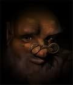

Forums galactiques > Assemblée Galactique : diplomatie officielle > Présentations
Pages : 1 2 ... 6 7 8 ... 31 32
| Big Brother Respect diplomatique : 49  18/07 ETU 11:46 | Score : 10 Détails L'assemblée était calme... L'écran central s'allume, un visage étrange apparait en très gros plan :
Salutations commandants Vous ne me connaissez pas mais moi je vous connais. Notre peuple est sorti de son autharcie après de longues années de guerre mais le peuple d'Océania, vainqueur, réapparait enfin. Big Brother voit tout. Big Brother sait tout. Nos intentions... vous les découvrirez bien assez tôt. Mais n'oubliez pas ceci : BIG BROTHER VOUS REGARDE ! L'image se brouille et le faisseau est brutalement interrompu | ||
| Valerio Del Sol'enys Respect diplomatique : 93  19/07 ETU 14:12 | Score : 13 Détails Trois personnes pénétrèrent dans l’hémicycle de l’Assemblée, côte à côté.
Au centre se tenait une femme rousse, de grande taille, qui toisait les commandants présents d’un air amusé, les mains posées sur les hanches. Elle était flanquée de deux hommes. A gauche un étrange jeune homme de haute stature. Ses longs cheveux noirs descendent en cascade sur ses épaules. Un grand manteau de couleur blanc neige et gris sombre est posé sur ses épaules. Il sourit énigmatiquement, son visage est fin et séduisant. Ses yeux sont noirs de jais. L’autre était de grande taille. Tout comme ses yeux, ses cheveux étaient bruns, coupés courts, et il portait d’austères vêtements gris. Son visage aux traits anguleux demeurait inexpressif, mais on voyait à sa démarche qu’il tenait à garder une allure droite. Le contraste entre le physique de ces trois-là était assez surprenant… C’est lui qui s’avança le premier au pupitre central pour prendre la parole. Il s’éclaircit la voix, puis commença son discours. « Le Clan Del Sol’enys présente ses respectueuses salutations à l’Assemblée Galactique et tient à se faire connaître de ses membres. Notre famille a récemment étendu son hégémonie, et son influence va en croissant. Cependant, nous n’entretenons a priori aucune hostilité avec qui que ce soit… Pour le moment. Je me nomme Valerio Del Sol’enys, Ainé de la Triade et Intendant du Clan Del Sol’enys. Et voici mon frère Eras et ma jeune sœur Illiana. Nous espérons que nous pourrons entretenir des relations cordiales et fructueuses avec ceux qui le désireront. Sachez que le Clan Del Sol’enys sera prêt à mettre ses services à la disposition de ceux-là. Je laisse maintenant la parole à ma sœur. » Sur ce, l’homme se retira et laissa place à la jeune femme aux cheveux roux. | ||
| Illiana Del Sol'enys Respect diplomatique : 69  19/07 ETU 14:14 | Score : 13 Détails La femme s’avança alors d’une démarche assurée. Ses longues jambes fines lui assuraient une haute taille, et ses longs cheveux de feu tombaient sur ses épaules.
Elle était vêtue d’un pantalon et d’une veste de cuir noir. Son visage fin dégageait une grande assurance tandis que ses yeux noirs balayaient l’ensemble de la salle. Elle s’approcha du micro et prit alors la parole : « Merci, Valerio. Bonjour à tous, commandants ! Comme vous avez pu l’entendre, je suis Illiana Del Sol’enys, Cadette de la Triade, et Responsable des Relations avec les commandants et de la Diplomatie, bien que mes frères n’aient pas besoin de moi pour prendre la parole, bien sûr. Le réseau d’informateurs dont dispose notre Clan a fait ses preuves par le passé, et a largement contribué à notre puissance actuelle. Aussi, nos alliés sauront y trouver leur bonheur, mais que nos ennemis sachent que tout finit par se savoir, complots et stratégies, accords "secrets" et avancées industrielles… » Tout en prononçant ces mots, la jeune femme n’avait cessé de scruter un à un les commandants présents, et de noter mentalement leurs réactions. « Merci de votre attention. Mon frère Eras aimerait également s’adresser à vous. Je lui laisse la place… » Elle s’éloigna alors du micro, en reculant, sans tourner le dos à la pièce, puis alla s’adosser dans un coin de la tribune, se fondant dans la pénombre, tandis que son frère s’avançait. | ||
| Eras Del Sol'enys Respect diplomatique : 288  19/07 ETU 14:14 | Score : 12 Détails Après qu'Illiana ait fait son discours, l'étrange jeune homme s'avance à la place de sa soeur pour prendre la parole. Son manteau blanc couvrant une grande partie de son corps on le voit à peine bouger les jambes pour avancer et il en ressort une impression assez étrange. Pourtant son déplacement est élégant et fluide, semblant total maître de ses mouvements. Il ne dit rien pendant un moment, observant les personnes présente, son sourire énigmatique toujours la.
Il entame d'un voix calme mais agréable, elle semble avoir un plus de fougue que les deux autres interventions même si le ton reste assez sombre. Il murmure un « Merci soeurette ... » à Illiania et lui sourit légèrement puis reprenant son air énigmatique il prend la parole. « Bonsoir a tous, je suis Eras. Si vous êtes un peu futés je suppose que vous avez deviné ma fonction. » « Pour ceux qui n'auraient rien compris, je suis l'ange de la mort Del Sol'enys. L'arme qui détruit ceux qui nous menacent est entre mes mains, si vous voyez ce que je veux dire. Non ? » il sourit malicieusement mais aussi avec un air très sombre, presque méchamment. « Je suis celui qui vous tombera silencieusement dessus si vous deviez ... disparaître ... pour notre sécurité c'est plus clair ? » « Quoi qu'il en soit, ne faites pas l'erreur de me considérer comme l'arme elle même » il sourit énigmatiquement. « Une arme a toujours besoin d'un bras et surtout, surtout d'une volonté. Je suis autant habilité a établir des relations et prendre parole a l'assemblée, ne l'oubliez surtout pas. ». il hausses des épaules et secoue légèrement la tête. Ses longs cheveux noirs bougeant en même temps. « Merci de votre attention, et d'avoir écouté, le clan Del Sol'enys vous dit a très bientôt ...» | ||
| Tooki Respect diplomatique : 23  20/07 ETU 21:56  | Score : 5 Détails Le petit combattant dénommé Tooki apparu dans cette salle de présentation. Sa petitesse fit rire beaucoup de commandant car tout le monde pensa que ce commandant n’était qu’un enfant. Cependant, malgré son mètre dix, une étrange puissance émanait de ses mains.
« Bon je viens, ici même, me présenter, cela est certainement un peu tard vu que certains événements ont précipité ma venue a l’assemblée. Je suis donc le commandeur Tooki, représentant du peuple des mages Skilts. Mon Arrière grand-père fut le commandant Dowee. Il n’était pas très connu, mais assez bon diplomate. Sa puissance de feu n’était pas non plus négligeable, et ses mécanoides étaient très performant pour l’alliance éternelle. Pour ma part, la diplomatie n’a pas été mon fort jusque là. Mais bon je pense arranger tout cela. Ma situation personnelle est comme vous le savez, la guerre. Et oui toujours cette phase que l’on ne peut éviter. Même si je n’aime pas ça. De plus, je pense en avoir pour un moment, puisqu’un commandant forme sa descendance contre mon peuple. Cependant, je reste la tête haute même si vous, vous me regarder en baissant la tête vu ma petite taille… J’ajoute que je suis certes petit mais j’ai une grande volonté de maintenir la paix en faisant mon possible pour limiter le pouvoir de certains tyrans. Sur ceux je vous souhaite une bonne soirée ou une bonne journée, selon votre système… » Le petit Skilts descendit de l’estrade et rejoignit son vaisseau pour repartir chez lui. | ||
| Laura Lee Respect diplomatique : 293  23/07 ETU 20:00 | Score : 12 Détails Une silhouette fine s'avança dans la Salle d'Inscription de l'Assemblée.
Elle portait une robe rose qui lui allait merveilleusement, et avait de longs cheveux blonds qui avaient l'éclat du soleil. Le petit homme gras du Bureau de Recensement lui avait dit de se présenter ici. On lui donna un papier où elle devait se présenter. Elle réfléchie un peu et écrivit: [Réf: 03298/Vidéo/vaisseau-amiral] Le secrétaire auquel elle remis le document fut un peu surpris. Il effectua des recherches dans sa base de données, et obtint une vidéo: La vidéo, de médiocre qualité, montrait une grande salle, dans un vaisseau vu le nombre d'appareils électronique. Deux silouhette indistinctes rentrèrent dans le champ de vision de la caméra: -…. Et moi je vous dis que Rincevent est un incapable ! -Peut-être, mais le seul domaine où il connais quelques réussites, c’est l’Accélération -Mais il y a toutes sorte d’accélérations ! Accélération de la vitesse, de la croissance,… -Cupidon-major Haserkeer, c’est un ordre La forme la plus petite fit un mouvement (peut-être un salut, peut-être une geste « significatif » de son avis sur la question) et sortis du champ. Elle revint bientôt avec une autre forme, semblant porté quelque chose ressemblant à une robe. L’image se précisa soudain, et on eut une meilleure vision de la scène. Les 3 individus formaient un triangle au centre de la pièce. A droite, un petit homme, doté de deux petites elles blanches, dont la figure était empourprée d’indignation. A sa droite, tournant le dos à la caméra, une femme en robe rose (elle rappelait vaguement au secrétaire celle que la commandante portais). Et enfin un individu pour le moins burlesque, vêtu d’une robe noir avec des inscriptions griffonées au fluo, et sa noble tête reposait sous un chapeau pointu où l’on pouvait voir écrit en grand « MAJE ». -Rincevent, faites grandir ce bébé en vitesse ! Vous vous y connaissez en accélération non ? -Oui oui, mais… -Pas de mais ! Au boulot ! C’est une question de temps avant que nous ne soyons interceptés pas l’ennemi ! -okok, j’y vais Le mage sortit du champ de vision de la caméra -Ne faites pas temps de chichi ! Vite ! -Sa vient sa vient ! Tout d’un coups il y eut une déflagration. Les 3 personnages furent soufflés dans le champ de la caméra. -Rincevent, qu’avez-vous fait ? -Ben je l’ai accéléré comme vous l’avez demandé…. -Vous lui avez fais transpercer le vaisseau à la vitesse de la lumière ! -A l’observatoire du vaisseau ! Ils sortirent une nouvelle fois du champ de vision de la caméra. On ne pouvait voir maintenant voir les différentes machines se trouvant à l’opposé de la salle. Une porte coulissant bruyamment. -Rincevent ? -Ben il semblerait que … -Mais ça fait mal ! … -okok ! Je l’ai bien fait grandir votre bébé, mais le problème c’est qu’en plus que l’ai fait accélérer… vous m’avez trop busqué ! -Vous avez tuez la chaire de ma chair ??? -Ben j’ai eut le temps de viser un peu. Votre enfant est vivant et adulte, mais dans un système planétaire dont nous n’avons pas l’accès, à cause d’orages magnétiques. Le mage et la porte que l’on avait entendu s’ouvrir atterrirent brutalement devant la caméra. L’écran devint noir, mais on entendit une petite voix fluette : J’ai atterris sur la planète « Farfadet malin », peuplé de Farfadet primitifs. Imaginez un petit lutin vêtu de peau de bête et vous saurez à quoi ils ressemblaient. Les farfadet me vénèrairent comme une déesse, car je les fit évoluer leur société jusqu’à l’âge spatial. La vidéo se termina. | ||
| Horlbar Respect diplomatique : 142  24/07 ETU 10:20 | Score : 8 Détails Le Commandant Horlbar avait été invité à se présenter devant l’Assemblée, comme tous les autres avant lui. Il pénétra dans la salle d’un pas raide, son allure montrant explicitement aux observateurs qu’il était ici pour faire son devoir, et rien d’autre. Visiblement, il n’aimait pas s’éloigner de ses hommes pour perdre son temps en formalités administratives.
C’était un homme de taille moyenne, le visage jeune et les cheveux clairs coupés très court. Le Commandant portait une armure composée de divers matériaux, dans les tons clairs, et sur le cœur étaient inscrits, ainsi que son grade, les coordonnées de sa planète natale, baptisée le Consortium. La partie inférieure de son visage était masquée par un étrange masque, qui semblait fait pour lui permettre de respirer sur les planètes où son corps serait normalement détruit, mais lorsqu’il parla, tout le monde comprit que sa fonction était tout autre… La femme qui l’accompagnait et qui devait mesurer plus de deux mètres, pour dépasser la centaine de kilogrammes sans tout son équipement militaire lui tendit un cadran numérique, et le Commandant prit la parole d’une voix que l’on comprenait de suite modulée par l’appareil relié à sa bouche : "Commandants… dit-il d’une voix lente et froide, je suis le Commandant Horlbar du Consortium, sachez tout d’abord que je ne prends aucun plaisir à être dérangé lors d’opérations militaires simplement pour vous présenter les forces dont je dispose…" Le regard froid du nouveau venu balaya l’Assemblée, et il reprit, un peu plus rapidement : "Mais comme tout bon soldat, je me conforme aux règles, et je vais donc vous présenter le complexe militaire que je dirige." La grande femme fit quelques pas en avant et posa un petit objet noir, carré et plan sauf en son milieu, où une légère protubérance ressemblant à un grand œil se mit à briller d’une lumière verte. Alors une image apparut, suffisamment grande pour que tout le monde la distingue nettement, et Horlbar prit la place de la femme. "Ceci est la planète que nous avons baptisée Consortium. Elle est le cœur de notre système, un centre de formation doublé d’une base militaire où nous effectuons sans cesse des recherches pour rendre nos machines plus performantes, nous y testons des produits visant à améliorer les capacités de nos soldats et c’est là que nous planifions les opérations d’invasions." Le jeune homme prit une pause pour montrer sur l’image l’intégralité de son système. Il ne semblait avoir aucun besoin de reprendre son souffle, s’exprimant comme une machine, tout comme il se déplaçait. L’on devinait qu’il n’avait pas grand chose d’humain… En effet, sa planète avait été connue par le passé pour son attraction principale : les jeux guerriers, en arènes, des équipes de soldats qui s’affrontaient dans un jeu sanglant pour parvenir au sommet et gagner le respect, tout en s’imposant comme de bons tacticiens, ce qui permettait d’accéder à un statut envié parmi les militaires. Bien entendu, devenir l’un des meilleurs demandait quelques sacrifices, et les guerriers, à la fin, n’avaient plus grand chose d’humain, les tissus, les muscles, les os et les principaux organes remplacés par des prothèses métalliques. A force, ils devenaient des machines à tuer insensibles à toute émotion et toute douleur. Il reprit de sa voix étrange : "Nous possédons donc un complexe militaire de grande importance, et sommes en train d’étendre notre influence aux limites de notre système. La conquête est pour l’instant notre seul objectif, mais nous pourrons dans l’avenir mettre nos forces à disposition des réseaux importants, ayant les moyens de s’offrir notre… collaboration." L’image disparut et la femme qui accompagnait le Commandant alla ramasser l’appareil qui l’avait émise. Horlbar prit alors une ultime fois la parole avant de quitter l’Assemblée : « J’estime avoir répondu à vos exigences en m’exprimant comme je viens de le faire. A présent, si vous n’y voyez pas d’inconvénients, je vais retourner diriger les opérations militaires en cours. Commandants... » Faisant claquer ses bottes sur le sol en guise de salut, Horlbar se retourna et prit le chemin de la sortie, accompagné par la guerrière qui formait son escorte personnelle. De dos, il restait impressionnant, et aucunement sans défense. Le Commandant avait sans doute fait impression, démontrant la froideur d’une parfaite machine à tuer… | ||
| Quobbes Respect diplomatique : 8  24/07 ETU 16:59 | Score : 8 Détails Un petit personnage, chauve, barbu, avec de petites lunettes rondes posées sur son nez, et vêtu pour le froid apparut dans le diffuseur d'hologramme. Il semblait impressionné par le nombre important de commandants qui s'éraient tournés vers lui. Il prit tout doucement la parole, avec un accent typiquement à lui :
"Hem...Hé bein, bien l'bonjour cômmandants, J'me nomm' Quobbes.Peursonnellement, ch'is plutôt un scientifique. Mais j'tais en mission sur un nâvire spâtial pour découvrir de nouvelles roches. Pis y'a eu un truc bizzârd, et j'me suis r'trouvé sur une planéte. Pis j'meu souis rendu compte qu'lâ civilisâtion qu'habitait lâ était pô bien évôlué, j'en ai profité pour me faire prôclamer dirigeants d'c'te plâtéte. Ah, les bougres n'savaient même pô qu'yavait d'la vie ailleurs qu'sur leur planéte. Alors, moui, en bon scientifiqu', j'les ai fait construire des vaisseaux, et j'ai conquéris des planét's, qu'on âppeule aujourd'hui "Les Nations Glâciaire Unies" (NGU). Ca sônn' bien vous trouvez pô? J'ai pô encôre eu l'temps, 'xcusez moui, d'consulter les archives pour savoir c'qui s'passait. Aussi, s'quelqu'un pouvait m'faire un p'tit résumé pâr X-com (c'est bien cômme çâ qu'ça s'appelle, nan?) ça m'aid'rait. Enfin c'comme vous voulez. J'ai âppris qu'il existait des coâlitions. Bien. Je s'rais ravi d'en r'joindre une mais avant tout, fô qu'j'm'informe sur la situâtion. Bon ben je croi qu'j'ai tout dit. Désôlé mais je n'peux pô rester, j'ai des âffaires â régler. J'consulterai c'qui s'passe par les nôtes d'un greffier. Mêrci d'm'avoir écouté!" On le vit se retourner, puis l'hologramme scintilla et finit par se brouiller hrp: merci de ne pas voter "orthographe insuffisante", j'essaye d'imiter(tant bien que mal) l'accent québéquois. Ainsi les [â] sont les a que les québéquois pronnonce un peu comme des [o](seuls eux savent le faire), les [ô] sont des [o] bien prononcés, etc... Merci de votre compréhension. | ||
| Gig'iman Respect diplomatique : 71  24/07 ETU 17:17 | Score : 9 Détails Ah ouaaaaiiiis...
J'ai oublié de passer par là ,moi aussi ! Bon bah ,vous me connaissez déja tous ,pas vrai ? ... Non ? -____-" ah... Bon ,bah je suis Gig'iman (par rapport a Gigiman ,il n'y a que l'astropophe qui a changé!),53.1 cm ,500 G , 301 ans,empeureur de "Quedalle-riendutout" du systeme 525. Mon passe temps préféré :Tapé la causette avec dieu par l'intermédiaire de la DD...(ne pas confondre avec la DD,bien sur). Ce qui me passionne: Le N31 (j'attend la sortie du N32) Mon pire cauchemard: L'angélus-cigogne.C'est un jour ou j'ai pris du N31 avec de la biere et j'ai vu un putain de piaf avec des ailes en feu et de la fumée qui lui sortait du cul...ym'courait apres le con ! Trop les boules !!! Ma catégorie :Boulet pacifique ne racontant que des conneries pour te faire perdre ton temps (et a ce que je vois ,c'est réussi) Autre : Tout les types de la galaxie sont fort ,inteligent ,sérieux ,ultra super beau...tout le monde est étonné en les voyants... Eh bien ça ,dans la galaxie ,ce sont des qualité qu'ont trouve partout.Donc si dans la galaxie ,il n'y a que des Ultra-méga-super-gigiga beau et inteligent ,eh bien faut bien qu'il y en ait un qui soit gigiga-trou du cul. Eh bah ,cui-là ,c'est moi.^^ (Pas d'bol pour toi ,yparait que la conerie ,c'est contagieux) Bon ,voilà. T'a perdu 45 secondes grace a moi.(parce que j'ai chronométré ,en plus) T'a la haine ,pas vrai ? Ouaaiiis.... T'a perdu du temps ,hein? Mais t'a bien rit.^^ | ||
| Tsukiyo Respect diplomatique : 4  25/07 ETU 15:11 | Score : 4 Détails Certains commandants sursautèrent, une main saisit le micro. Sauf que cette main flottait seule dirigeant le micro vers le vide. Et peu à peu, une jeune femme apparut. Sa longue chevelure argentée retombait sur sa peau diaprée. Elle était vetu d'une simple robe couleur de lune et une ceinture d'argent marquait sa taille fine. Ses ailes noires s'étiraient régulièrement en battement lent. Enfin , elle prit la parole :
"Bonjour à tous les commandants de cette assemblée. Je me présente, Tsukiyo. Je represente les Tryalis. Prêtresse vesperales, nous offrons rêves et cauchemars a vos nuits. Je serais discrète parmis vous, après tout, seul votre subconscient m'interesse. Puisse les nuits nous porter conseil." Elle disparut laissant place, quelques secondes, à un nuage argenté. | ||
| Khlan Respect diplomatique : 78  27/07 ETU 20:14 | Score : 10 Détails *Un homme assez âgé s'avance au sein de l'Assemblée. Blouse blanche, cheveux blancs sales.
Mains dans le dos, oublieux de ce qui l'entoure, il discute avec un homme, grand, musclé. Un homme étrange, une hache dans le dos. Un homme... Un homme ?* Non, non... tu ne comprends rien... Personne ne comprend ! *Soupir* C'est usant. Devoir m'adapter sans cesse à votre intelligence limitée... Il est pourtant évident qu'inverser la polarité... Maître ? Nous sommes arr... Quoi !? Quoi !!? Tu.... Qui es tu pour oser m'interrompre !! A genoux, misérable ! Vermine ! Insecte ! Moins que rien !!! AAAAH !!! Une arme ! Un couteau... Non, une hache, que l'on me donne une hache ! *L'air hagard, les cheveux en désordre, il regarde autour de lui, écumant de rage. Peu à peu, il se calme (?) commençant à comprendre où il se trouve. Je.. euh... Pourquoi ne m'as tu pas dit que nous étions arrivés, misérable ! *Lève les bras au ciel* Mais pourquoi suis-je donc entouré d'incapables !! Qu'ai-je fait pour mériter ça ! *Voix geignarde* *Pour la première fois, s'adresse à l'Assemblée* Commandants, Veuillez m'excuser... pour cette.. ce petit moment de distraction... Le fautif sera puni... *Regarde l'humanoide agenouillé* Kal, tu t'arracheras le bras droit... Maître, ce bras est déjà... Alors tu te feras arracher les deux !! Idiot ! Tu peux me remercier pour ma clémence, tu méritais pire... Ne pas m'avoir prévenu... Merci, Maître. (avec une majuscule s'il-vous-plait ;)) *A l'Assemblée* Que voulez vous... trouver un serviteur correct est tellement difficile de nos jours... Il est mieux de les créer, mais si peu... *Les yeux dans le vague* Créer... Aaah, la création.... Savez vous ce que l'on ressent à créer ? Je ne parle pas de la création vulgaire... Mais de la vrai création... la Création, avec une majuscule ! Créer l'intelligence... Aaah, quel sentiment... Je me demande ce qu'a ressenti l'être qui nous a créés... Comment le savoir... Avons nous été créés ? Si c'est le cas ce créateur n'avait pas mon talent, c'est évident ! Mais ça peut se deviner, se savoir... Tout finit par se savoir.. Je le demanderai aux... *Soudainement, s'interrompt. Ressemble pendant quelques instants à un gamin qui aurait apercu une friandise* Oooh, et si j'ajouter un bicondensateur polarisé de type 23 ? Il faudrait essayer... *Autoritaire* Kal, j'espère que tu as noté. Préviens le labo, j'essaierai en rentrant demain... Non, pas demain, maintenant ! On rentre maintenant ! Et qu'ils aient le matériel prêt !! *Fixe brutalement les commandants présents* Commandants, Je vous salue... Je ne sais plus pourquoi je suis venu, mais cela a dû être fait. Ah, si ! Etablir une ambassade... *Jette un bref regard à l'humanoïde* Kal ! Tu t'en occuperas ! J'ai à faire... *L'homme sort brusquement, marmonnant quelques paroles incompréhensibles. Il est suivi de "Kal", qui ne dit mot* | ||
| L'Archange Nathaniel Respect diplomatique : 131  27/07 ETU 20:15 | Score : 1 Détails Edit le probleme aant été corriger :)
| ||
| G-igiman Respect diplomatique : 137  27/07 ETU 20:56 | Score : -2 Détails Mouais...
En comptant les autres vies ,ça n'a pas l'air d'etre la premiere fois que tu débarque a l'assemblée. | ||
| Mestras Respect diplomatique : 8  30/07 ETU 11:07 | Score : 8 Détails Enfer et damnation !
Où sont ceux de ma race ? Où se trouvent les êtres de la nuit ? Partout il n’y a que l’homme et son envie de destruction. Partout je ne vois que déchéance et chaos. Les colonies ne s’étendent que trop lentement, la générosité humaine ne laissant que quelques cadavres purifiés en guise de repas. Cette sous race ne s’est que trop multiplié, sacrifiant au gré du temps des êtres chers pour nous autres, seigneurs des ténèbres. Pourquoi cette horrible légion incapable et désordonnée devrait contrôler cette galaxie ? Devrions nous nous laisser faire ? Chers vampires, mattons ses hommes, montrons ce que signifie le mot puissance. Abattons cette race, pour la gloire de nos ancêtres, pour la lune, la nuit et le tout puissant ! Que la chasse commence ! | ||
| F.B.I Respect diplomatique : -19  30/07 ETU 11:18 | Score : -1 Détails Vous savez la galaxie est regorger de traîtres de tuers mais y il a aussi des bons qui aide les jeunes commandants comme vous alors s'est avec un plaisir que je vous dit sa :
Si vous avez mesoin de quel choses n'ésiter pas me demander un coup de main en ressourse ou en flotte ou en leems. Messieur F.B.I | ||
| Ben Oreat Respect diplomatique : 10  30/07 ETU 17:26 | Score : 4 Détails Bonjour, je me présente en tant qu'homme loyal et honnête. Je privilégie la démocratie mais compte sur la justice divine pour établir une autorité qui, au contraire, ne nuit pas à la plupart des commandants, mais plutôt pour améliorer l'entente qu'un régime totalitaire.
Tel est mon serment : 1/ Aide les autres jusqu'a ton dernier souffle. 2/ Ne craint pas la mort car elle aussi viendra te chercher un jour. 3/ Soit brave honnête et courageux pour être aimé de tous. 4/ Respecte les autres et ne trahis jamais tes amis ou ta famille. 5/ La voie suprême est le chemin de la philosophie et la sagesse. 6/ Ta bonté d'âme sera connue chez tes ennemis, même bien avant que tu ne les combattes. 7/ aie pitié des plus misérables et vient leur en aide. Un jour viendra ou il te seront reconnaissant. 8/ SOIT JUSTE POUR ALLER AU PARADIS ET AIME TON CREATEUR. Si tu détiens ces capacités, alors tu deviendras un être supérieur ... Ben oreat partit, anxieux de la pensée des autres commandants à son égard. """ Ainsi tous les savants ont respecté ce commandement. J'espère suivre leur voie de l'illumination...""" | ||
| Elaeis Respect diplomatique : 17  30/07 ETU 18:22 | Score : 6 Détails Bonjour
Je me présente ! Je suis un arbre qui suite à l'erreur de manipulation de sa baguette magique par une fée maladroite, a été transformé en humain. Ce n'est donc pas mon choix, mais j'ai hérité d'un modeste domaine, dans un recoin isolé de la galaxie. D'un esprit ouvert au monde, j'ai sans doute un peu précipité l'ouverture de mon système, car à présent j'y reçois de nombreuses visites... Mais étant de nature optimiste, je suppose que les Commandants suivants : Park Popoo Chiana Smiticks Tooki ............. ne sont venus que par esprit de curiosité et de soif d'amitié ? Merci Noble assemblée de m'avoir écouté | ||
| Elaeis Respect diplomatique : 17 31/07 ETU 10:50 | Score : 2 Détails Chère et Noble assemblée !
Je profitai d'une fine et douce pluie qui arrosait mon feuillage délicatement, lorsque une message m'est parvenu apporté par un jeune et vaillant arbrisseau. Les nouvelles sont mauvaises ! En effet, précédemment j'ai remercié plusieurs commandants de leur visite que je croyais de politesse. Hors je m'arperçois qu'à présent ils déplacent leurs flottes vers des secteurs internes du systèmes ! Est-ce bien nécessaire pour une simple visite de courtoisie ? De mes branches les plus hautes à mes racines les plus profondes, en passant par mon coeur humain, je sens des intentions mauvaises se dessiner dans certains esprits. Nous n'avons aucun moyen de défense contre ces envahisseurs. Pour cette raison, je m'adresse à la Noble assemblée en espérant que des commandants puissants seront en mesure de faire entendre raison à ces visiteurs à présent indésirables . Merci pour toute aide qui nous permettrait de survivre dans cette galaxie ! | ||
| Eowei Respect diplomatique : 152  31/07 ETU 22:52 | Score : 5 Détails ******un jeune homme se lève dans un coin obscure de la salle de l'assemblée et applaudi Elaeis pour ce discoure .Il s'avance ensuite vers le centre pour rejoindre son ami. ****
Seigneur, quand j'ai pris la relève de mon père dans la gestion de ma planète je pensai avoir le loisir de faire mon petit commerce sans les désagrément de la guerre .Mais la vu de ces multiple vaisseau dans mon territoire spatial je m'inquiète. C'est pourquoi je demande la protection des grands seigneurs bien-sure quand je dis seigneur je n'oublie pas ces gente dame qui apporte un peu de beauté dans ce monde de brute. Merci de m'avoir écouté. **** Après ce petit discour il remonte vers sa place tranquillment et demande à son fidéle bras droit de préparer la défense de la planète. ***** | ||
| Grabeuh Respect diplomatique : 1675  01/08 ETU 02:40 | Score : 5 Détails La porte de l'assemblée s'ouvre, un jeune et noble protoss entre. Il a entre les mains un petit carnet en papier où est sans doutes marqué son discours.
"Commandants, je suis....... Grabeuh ! Quel nom d'une étrange étrangeté vous dites vous donc en cet instant instantané... Il est effectivement étrangement étrange, et possède des consonnances proches du son prononcé lorsqu'on parle d'un bout de viance de boeuf bien grasse, ou alors il ressemble à un langage d'orcs de la planète Azeroth, voire à un cri d'amour de chameau en rute..." Les commandants, amusés, continuent à l'écouter. "Voyez vous, il se trouve que je suis....... Grabeuh ! Et je suis un protoss. On en voit rarement dans cette branche brachesque de la galaxie, je le sais fort bien. Mais je suis arrivé jusqu'à vous grâce à des techniques plus ou moins... technologiquement technologiques. Je suis encore assez faiblement faible, car mes "pylons" étant trop loins de ma chère Aïur, mes forces ont du mal à se développer correctement. Je vais donc être obligé de m'adapter aux méthodes localement locales. Premièrement, je dézingue, je défoque, je débourre, je démarquouilles quiconque s'approchera de mon natal, fusse-t-il le plus puissamment puissant des commandants... Deuxiemement, je suis à la recherche d'une coalition fortement forte, capable de m'aider à me développer rapidement. Troisièmement, je vais d'ici peu de temps ouvrir un musée des armes antiquement antiques, où seront exposés les objets qui ont participé à la construction d'Origine : du blaster personnel de Calomu, à la Tapette Géante à Prophète, en passant par "LE" bilboquet. Si vous possédez dans vos collections privées des armes de ce type, ou même d'autres effets personnels de gens illustrement illustres, contactez moi, ils seront exposés en vitrine." Sur ce, le commandant Grabeuh s'en va en laissant derrière lui son carnet, qu'il n'a pas regardé une seule fois durant tout son speech. Un commandant le prend et regarde à l'intérieur : "liste des courses au galacti-marché : lait oeufs spaghetti pesto verde ..." Il dit alors : "Quel étrange bonhomme, ce Grabeuh..." |
Pages : 1 2 ... 6 7 8 ... 31 32
Forums galactiques > Assemblée Galactique : diplomatie officielle > Présentations